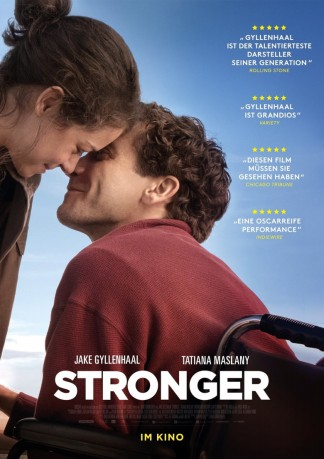
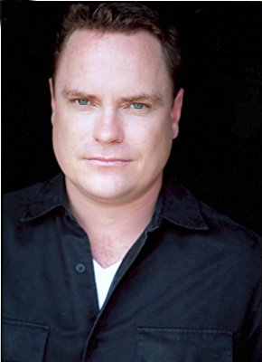
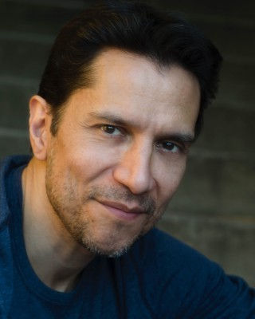

#9416 Stronger
 
 IMDB-Wertung: 7.0 / 10
IMDB-Wertung: 7.0 / 10  Tomatometer: 90
Tomatometer: 90  Metascore: 76
Metascore: 76 
Jeff Bauman (Jake Gyllenhaal) steht an der Ziellinie des Boston-Marathon von 2013, um seine Ex-Freundin Erin (Tatiana Maslany) anzufeuern – und hoffentlich zurückzugewinnen – nichtahnend, dass sich sein Leben im nächsten Moment für immer verändern wird. In der Nähe des 27-Jährigen explodiert ein Sprengsatz, der ihm beide Beine wegreißt. Bauman wird mit vielen anderen Schwerverletzten sofort ins Krankenhaus gebracht. Nachdem er das Bewusstsein wiedererlangt, kann er einen der Attentäter identifizieren und den Ermittlern entscheidende Hinweise liefern, um die Terroristen zu fassen. Jeffs eigener Kampf hingegen steht ganz am Anfang. Für ihn beginnen langwierige Reha-Maßnahmen, die er nur durch die unermüdliche Unterstützung von Erin und seiner eigenwilligen Familie durchsteht. Seine Art, mit dem niederschmetternden Schicksal umzugehen, lässt ihn zu einem Helden wider Willen werden und den Weg zurück ins Leben finden.
Jahr: 2017
Dauer: 119 Minuten
FSK: 12
Land: USA Studio: Roadside AttractionsTonspuren: DTS - ,
Untertitel: Deutsch,
Auflösung: 1080p (1920x808) Größe: 9318 MB
Genre: Drama, Biographie
Regisseur: David Gordon Green
Drehbuch: John Pollono, Jeff Bauman, Bret Witter
Soundtrack: Michael Brook
Darsteller:
 Jake Gyllenhaal als Jeff Bauman
Jake Gyllenhaal als Jeff Bauman Tatiana Maslany als Erin Hurley
Tatiana Maslany als Erin Hurley Miranda Richardson als Patty Bauman
Miranda Richardson als Patty Bauman- Richard Lane Jr. als Sully
- Nate Richman als Big D
 Lenny Clarke als Uncle Bob
Lenny Clarke als Uncle Bob- Patty O'Neil als Aunt Jenn
 Clancy Brown als Big Jeff
Clancy Brown als Big Jeff- Kate Fitzgerald als Aunt Karen
-  Danny McCarthy als Kevin
 Frankie Shaw als Gail Hurley
Frankie Shaw als Gail Hurley-  Carlos Sanz als Carlos
- Sean McGuirk als Bill Hurley
- Johnny Hickey als Security Guard
- Rena Maliszewski als Agent Morrell
 Owen Burke als Townie #1
Owen Burke als Townie #1- Jimmy LeBlanc als Larry
 Bates Wilder als Chelmsford Cop
Bates Wilder als Chelmsford Cop- Irene Gerakas als Reporter
- Moira Driscoll als Hospital Nurse
- Darlene Van Alstyne als Head Nurse
 Maggie Castle als Mom at Fenway
Maggie Castle als Mom at Fenway- Nancy Villone als Waitress
- Sonaz Izadi als Admin Co-Worker
- Jennifer Pollono als Woman Who Reaches for Jeff
- Benjamin Hanson als Fenway Fan
 Stephanie Atkinson als ICU Nurse
Stephanie Atkinson als ICU Nurse- Curtis Eames als BMC Surgical Tech
- James Braver als BMC ICU Doctor
- Marco Aguirre als Red Sox Fan (uncredited)
 Giovanni Alabiso als Bombing Victim (uncredited)
Giovanni Alabiso als Bombing Victim (uncredited)- Ernest Anemone als National Guard (uncredited)
- Kristen Annese als Luxury Box Server (uncredited)
- Nelson Aquino als Emergency Room Doctor (uncredited)
 Ralph Ayala als Bombing Victim #6 (uncredited)
Ralph Ayala als Bombing Victim #6 (uncredited)- Theodora Blot als Marathon Runner (uncredited)
- Eliane Brick als Fenway Park Audience and Holding Red Sox Flag (uncredited)
 Brina als Bar Patron (uncredited)
Brina als Bar Patron (uncredited)- Van Brockmann als Emergency Room Nurse (uncredited)
 Mark Burzenski als Garden Executive (uncredited)
Mark Burzenski als Garden Executive (uncredited)- David Callanan als BAA Blue Jacket Official (uncredited)
- Dario Micah Cocchi als Teen Townie (uncredited)
- Josephine Cooper als First Responder (uncredited)
 Jeffrey Corazzini als Doctor (uncredited)
Jeffrey Corazzini als Doctor (uncredited)- Maria Cortes als Family Member (uncredited)
- Kevin Daigneault als BAA Volunteer (uncredited)
- Hosea DeMarzino als Boston Marathon Runner (uncredited)
- Rob DiNinni als Usher (uncredited)
- Sunny Duane als Hospital Bombing Patient (uncredited)
 Manny Famolare als Photographer (uncredited)
Manny Famolare als Photographer (uncredited)
Datei: X:\2017(N-Z)\Stronger (2017, FSK12, 1920x808).mkv seit 30.08.2018
Festplatte: HD 2017(A-Z)-2018(A-F)
 Es gibt insgesamt 170 Filme in der Gruppe '2017(N-Z)'
Es gibt insgesamt 170 Filme in der Gruppe '2017(N-Z)'